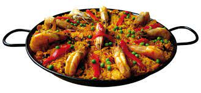

Paella

Paella is a traditional Spanish rice dish originating from Valencia. This flavorful one-pan meal combines rice, saffron, and a variety of ingredients such as chicken, rabbit (optional), vegetables like bell peppers and green beans, cooked together in a wide, shallow pan. The dish is characterized by its vibrant colors and rich flavors, with a deliciously crispy layer of rice at the bottom known as "socarrat."
Ingredients:
- 300 grams of rice (preferably bomba rice)
- 300 grams of chicken (thighs or breasts)
- 300 grams of rabbit (optional)
- 200 grams of green beans
- 200 grams of garrofón (you can use peas as a substitute)
- 1 ripe tomato
- 1 red bell pepper
- 1 green bell pepper
- 1 onion
- 2 cloves of garlic
- Saffron threads or food coloring
- Chicken broth or vegetable broth
- Extra virgin olive oil
- Salt
Steps:
- Cut the chicken and rabbit (if using) into small pieces. Sauté them in a paella pan with hot oil until golden brown. Remove and set aside.
- In the same paella pan, add a bit more oil and sauté the chopped onion, bell peppers, and garlic. Cook over medium heat until tender.
- Add the grated tomato and cook for a few more minutes.
- Incorporate the chopped green beans and rice. Stir well to mix the flavors.
- Add the saffron or food coloring and pour the hot broth into the paella pan. Let it cook over medium heat for about 20 minutes without stirring too much.
- After 20 minutes, place the reserved chicken, rabbit (if using), and garrofón (or peas) on top of the rice. Cook for another 10 minutes approximately until the rice is cooked and a crust forms at the bottom (socarrat).
- Remove from heat and let it rest for a few minutes before serving.